版本更新说明
QQMusicWear 2.1.3
一块手表，四套曲库：多音乐源正式上线
这是 2.1.1 之后的一次大版本更新，核心只有一件事：把播放器从「只能听 QQ 音乐」升级成「多音乐源」。现在同一只手表上可以切换 QQ音乐、酷狗音乐、酷狗概念版、网易云音乐 四套曲库，界面主题色、首页内容、桌面图标名称、登录账号全部跟着音乐源一起切换。围绕多源，还补齐了歌曲评论、播客/电台、私人漫游、动态/关注等内容能力，并修掉了一批稳定性问题。
一、更新概览
| 分类 | 本次更新内容 |
|---|---|
| 核心新增 | 多音乐源：QQ音乐 / 酷狗音乐 / 酷狗概念版 / 网易云音乐，一次只加载一个源，切换即切换曲库与账号 |
| 新增页面 | 歌曲评论、播客/电台、动态/关注；歌手页新增「专辑」分区；播放页新增评论入口 |
| 内容能力 | 私人漫游（私人FM）、云盘、酷狗「我的歌单 / 我喜欢」、歌手歌曲真实分页 |
| 体验与修复 | 切换源后首页空窗、下载按钮状态串曲、下载后封面丢失、单曲解析失败拖垮整批、切源后未停播等十余项 |
二、多音乐源：一个 App，四套曲库
音乐源是外置的 JS 插件（带签名校验），宿主负责播放、下载、歌词、账号等通用能力。因此四个源共用同一套播放页、歌词页、队列与下载管理，只有品牌色、首页内容和账号体系随源变化——界面不会因为换源而变成另一个 App。
2.1 在设置里切换音乐源
入口在「设置 → 通用 → 音乐源」。列表里每个源左侧的圆点就是它的品牌色，右侧圆环表示当前选中项。
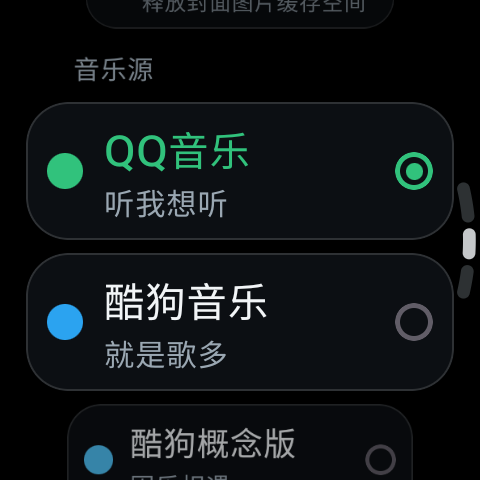 音乐源列表（上）：QQ音乐 / 酷狗音乐 |
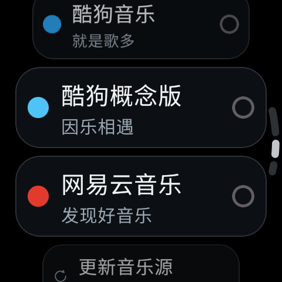 音乐源列表（下）：酷狗概念版 / 网易云音乐 |
| 音乐源 | 品牌色 | 首页大卡 | 登录与账号 |
|---|---|---|---|
| QQ音乐 | 绿 #31C27C | 每日30首 / 猜你想听·私人雷达 / 排行榜 | 扫码登录 QQ 音乐账号 |
| 酷狗音乐 | 蓝 #2BA3F0 | 酷狗热歌 / 酷狗TOP500 / 歌单广场 | 扫码登录酷狗账号 |
| 酷狗概念版 | 浅蓝 #4FC3F7 | 酷狗热歌 / 排行榜 / 歌单广场 | 扫码登录酷狗概念版账号 |
| 网易云音乐 | 红 #E23B2E | 每日推荐 / 私人推荐 / 私人漫游 / 播客电台 | 扫码登录网易云账号 |
2.2 首页内容随源变化
首页不再是写死的版式，而是由音乐源通过 homeFeed 契约给出卡片：卡片数量、标题、封面、动作（进歌单 / 进榜单 / 直接开播私人漫游 / 进播客电台）都由源决定。下面三张图是同一个首页在三个源下的样子。
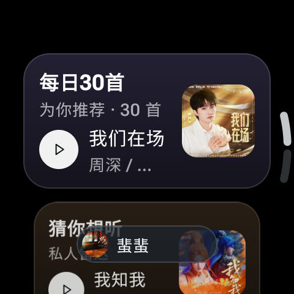 QQ音乐：每日30首 · 猜你想听 |
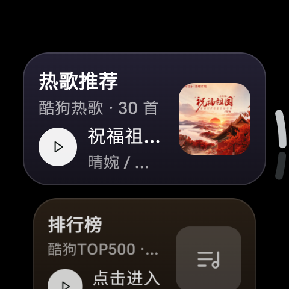 酷狗概念版：热歌推荐 · 排行榜 |
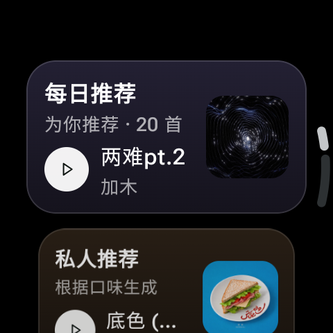 网易云音乐：每日推荐 · 私人推荐 |
切源时会发生什么：立即停播并清空当前播放队列，随后按新源加载首页与账号；登录凭据按源分别保存，切源即切账号，互相不会串号。桌面上的应用名与图标也会跟着源变化（QQ音乐 / 酷狗音乐 / 酷狗概念版 / 网易云音乐）。
三、四个音乐源的播放页
播放页四源共用：圆盘封面、上滑进队列、转表冠切歌、底部副控件（音量 / 喜欢 / 音质 / 下载 / 评论）。换源后只有品牌色与「评论」入口的可用性随之变化。
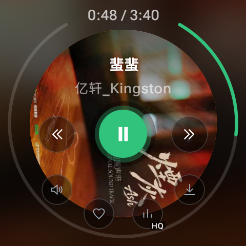 QQ音乐（绿） |
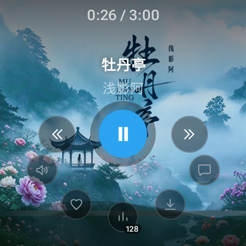 酷狗音乐（蓝） |
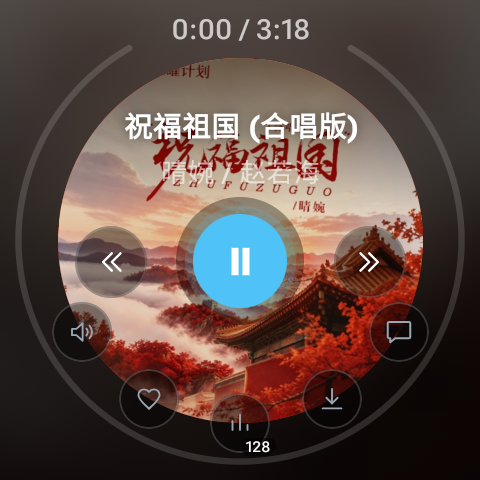 酷狗概念版（浅蓝） |
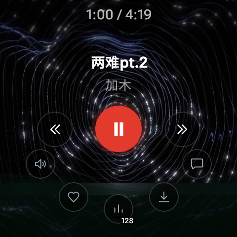 网易云音乐（红） |
四、内容能力补齐
这一版给音乐源补上了「看内容」的部分，而不只是「放歌」：
- 歌曲评论：播放页底部新增评论入口，支持热门/最新评论与分页；QQ音乐、酷狗音乐、酷狗概念版、网易云音乐均已接入。
- 播客 / 电台：网易云源的电台列表与节目单，可整期播放。
- 私人漫游（私人FM）：首页大卡一点即拉一批推荐直接开播。
- 动态 / 关注：登录后可看好友动态与关注列表。
- 歌手页「专辑」分区：歌手页可以直接翻专辑，再进专辑曲目。
- 我的歌单 / 我喜欢：酷狗走 android 签名网关接入真实歌单与红心收藏。
| 歌曲评论 | 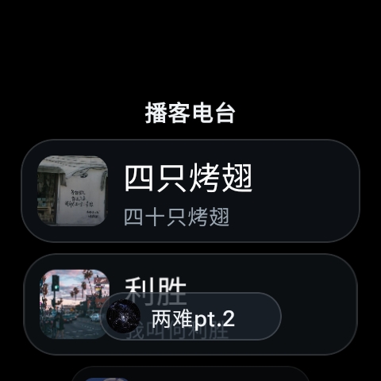 播客 / 电台 |
五、账号与登录
四个源各自保存一份登录凭据，互不影响；账号卡会显示头像、昵称、来源账号，并在昵称右侧用平台色标出会员身份（绿钻 / 酷狗 / 概念版 / 黑胶），一眼能看出当前听的是哪个平台的账号。
| 账号卡 · 会员身份徽标 | 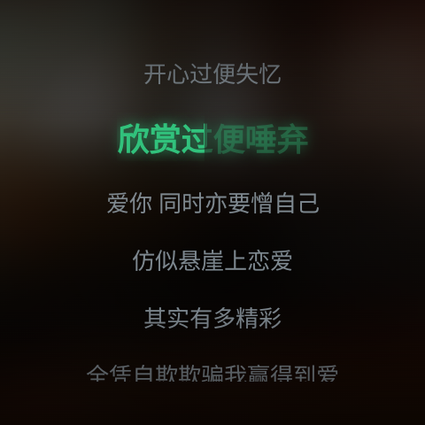 歌词页 · 卡拉OK逐行填充 |
六、修复与体验优化
- 切换源后首页空窗：改为等待源就绪再取数据，切换源时同步停播并清空队列。
- 下载按钮状态串曲：播放页下载状态改为按歌曲隔离，不再出现「这首没下载却显示已下载」。
- 重启后封面丢失：下载记录补存封面地址，已下载列表不再丢图。
- 单曲解析失败拖垮整批：酷狗 / 网易云的批量解析改为逐首容错，单曲异常自动降级或跳过。
- 桥接层异常逃逸：源脚本里的网络异常不再抛穿到脚本引擎，源脚本的 try/catch 恢复生效。
- 酷狗：换用证书有效的接口域名，剥离响应包裹标签，按音质选择对应播放地址哈希。
- 网易云：歌单改为真分页；修正加密接口路径（此前评论等接口 404）；红心改走客户端身份，解决「当前环境异常，已取消喜欢」。
- 圆表进度样式：「封面描边」不再叠画屏幕边缘进度环，只保留圆盘外圈进度弧。
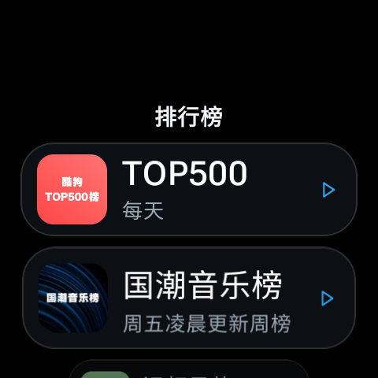 排行榜 |
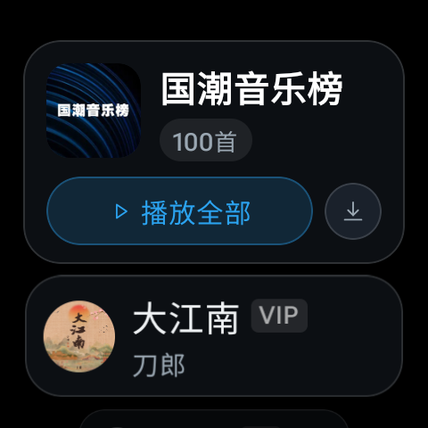 榜单曲目 · 一键播放全部 |
七、已知限制与后续计划
- 听歌识曲尚未实现：依赖外部音频指纹服务且需要自备密钥。
- 酷狗 KRC 译文 / 罗马音暂时搁置：格式尚未稳定验证，先保证原文歌词与卡拉OK填充可用。
- 番茄畅听源待补充。
- QPlay 投放（手机 QQ 音乐把歌投到手表上播放）仍在开发中，尚未开放，请勿在正式使用中依赖。
八、如何升级
- 直接覆盖安装本版 APK，已有歌单、下载、播放队列与设置都会保留。
- 安装后进入 设置 → 通用 → 音乐源 → 更新音乐源，把音乐源更新到最新版本，否则可能出现搜不到歌、没有评论入口等问题。
- 首次使用某个源时，在该源下到设置里扫码登录对应平台账号，登录凭据按源分别保存。
本项目仅供学习交流使用，所有音乐内容来自各平台公开接口，请勿用于商业用途；喜欢请支持正版。